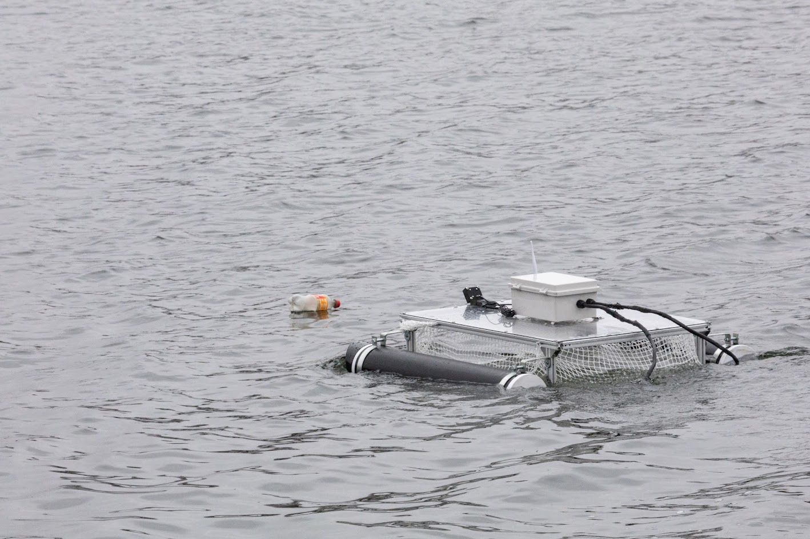
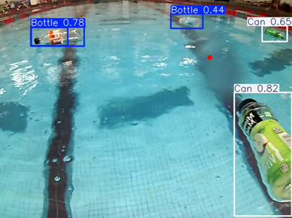

Cleaning Ocean Plastics
The Design and Prototyping of a Low-Cost & Efficient Ocean Cleanup Robot
An estimated 11 million tons of plastic waste entered the oceans last year, joining the 200 million tons already crowding Earth’s waterways, per Ocean Conservancy. This waste poses a significant health risk to both humans and marine wildlife. Existing robotic systems for combatting plastic waste are expensive and require significant human support, preventing the kind of large-scale operation needed to combat waste accumulation.
Your browser does not support the video tag.Our project aimed to develop a functional and robust prototype of an autonomous aquatic vehicle for ocean trash collection, with the hope that future iterations of this project could expand our design and develop a plan for mass production. We built a custom catamaran-inspired design featuring two large pontoons attached to a central hull, which contained a mesh net for passive trash collection and our central electronics enclosure. We used a Raspberry Pi 5 for our main controller with an ESP32 and ESCs to control our two brushless DC motors
I worked on setting up our core ROS2 architecture and control system, including developing both our teleoperative motor controller and our autonomous navigation system. I also was the sole developer of our custom vision pipeline, using the Ultralytics YOLO12 library with a custom model trained with images collected from the robot's on-board camera during live testing. I was also a lead author and editor on our final technical report, helping set our style guide and writing a significant portion of our background, software, and results sections.